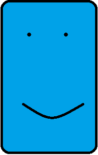

I am Ayush Bishnoi 17BIS0066, I am currently persuing my Bachelors of technology
in Vellore Institute of Technology in Electronics and Communications Engineering
with a specilization in Internet of Things and Sensors. I am a Designer for my chapter
The Computer Soceity of India
The subjects that I have taken this semester are as follows
-
Microcontollers and Embedded Systems - ECE3031
It is a core subject pertaining mainly to Systems and Microcontroller architecture.
-
Intoduction to Web Technologies - ITE1002
A Program Elective that teachs the basic of frontend and minimal backend devolopment
-
Applied Linear Algebra - MAT3004
A Mathamatics course that is related to matrixes and solving systems of simultanous linear equations
-
Electronic Circuits - ECE1013
A basic Electronics course about the functioning of Transisters and MOSFETS
-
Introduction to Ettiqutte - STS2002
The Soft Skills course that is offered to all second years in their 4th semester
-
Fermentation Technology - CHE1016
A Chemical Engineering course that I had to take to make up credits
-
Lean Start-up Management - MGT1022
A University core, this is about buisnesses and coming up with an idea for your startup
-
Sensor Technology - ECE3032
A Program core, to gain high level knowledge about Sensors and thier underlying technologies
My three top favorite TV shows are as follows
-
Mr. Robot
-
Game of Thrones
-
Grand Tour

When I am
Happy and I know it
To my right, Ritu Raj
He was done his High School Education from DPS Patna, He seems like a chill guy.
Describe your skill level in Programming Languages
I would call myslef an expierenced Coder, I have a high skill level in logical coding. I know C, C++, Java, & Python. I have had a lot of expience with python, This expience was derived from a lot of application based learning. When it comes to Mark-up Languages, I have always wanted to learn proper front=end development, but never recieved the proper guidence. Part of the reason I have taken this course on Web Technologies is mainly to learn proper front-end development. This will help me out in the future as Web Designing and Web Development is what majority of the jobs require.
{kind=link}
{kind=link}